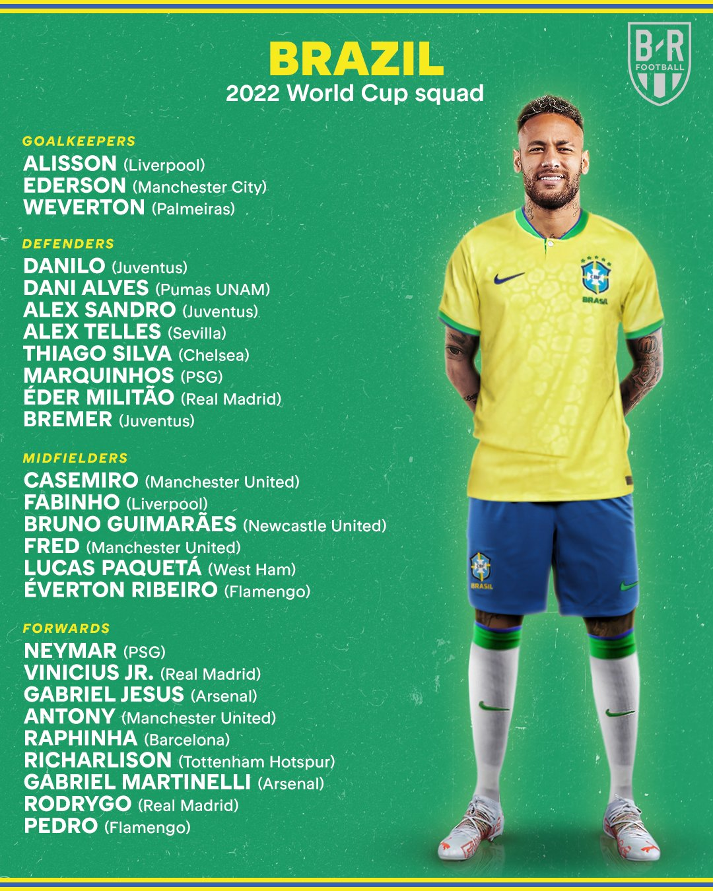
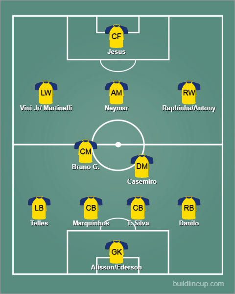

Squad Reaction - Brazil

Guess my fears were true in the end. Fullbacks seem like the only weakness for Brazil here with only Alex Sandro/Alex Telles on the left and Danilo/Dani Alves on the right. Don’t get me wrong, I am happy Alves is somehow there in the lineup but it’s seriously weird seeing weak options there compared to literally everywhere else in the team. In goal, I think Ederson would mostly start but Alisson has made many saves but it will be a headache. In defense, you can’t look past Marquinhos and Thiago Silva(Valiant Captain). In the fullback position, I would probably start Telles(LB) and Danilo(RB). In midfield, Casemiro deserves the start ahead of Fabinho. Instead of Fred partnering with him, I think Bruno G deserves a shout alongside him. He is on form for Newcastle. He is good physically and can pass around well so I think he deserves a go, ahead of Fred. The attack is where it is a real headache for anyone. How Firmino is not selected ahead of the likes of Richarlison I will never know. What to do when you have so much quality, you have to make tough calls. In attack, Neymar is obviously going to be on the left. Paqueta could be good at CAM and on the right, there are options galore with the likes of Antony, Raphinha, Rodrygo and more. Or Neymar could be shifted to CAM to allow Vini Jr to be LW. At ST, it should definitely be Gabriel Jesus after his great season with Arsenal.
The lineup:
